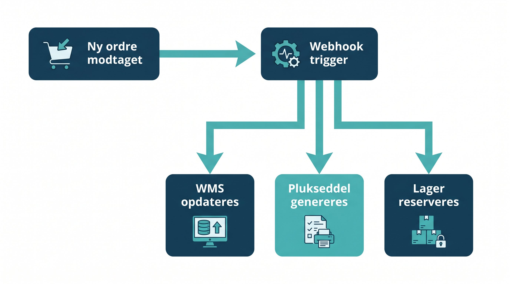

Forestil dig at din webshop fortaeller dit lager om en ny ordre i oejeblikket, den laeegges. Ikke hvert 15. minut. Ikke naer nogen trykker opdater. Oejeblikkeligt, automatisk, uden menneskelig handling. Det er hvad webhooks gør.
Webhooks er et af de mest kraftfulde, men mindst forklarede værktøjer i modern logistik-tech. Mange lagerchefer ved ikke engang, at deres systemer bruger dem. Men forstår du dem, kan du tage bedre beslutninger om din systemintegration og faa hurtigere, mere paalidelig dataudveksling.
Her er en klar forklaring uden unoevendig teknik.
👉 SmartPack bruger webhooks til realtidsintegration med webshops og fragtløsninger. Laer mere om vores integrationsmuligheder
Hvad er en webhook, forklaret enkelt
Normalt når to systemer udveksler data, sker det på en af to maader:
- Polling (pull): System A spoerger system B regelmæssigt: "Er der noget nyt?" Det er som at tjekke din postkasse hvert 15. minut. Uenergigt og langsomt.
- Webhook (push): System B sender automatisk en besked til System A, naer noget sker. Det er som at faa en SMS, naer posten ankommer. Hurtigere og mere effektivt.
En webhook er teknisk set en HTTP POST-anmodning. Naer en bestemt hændelse sker i kilde-systemet (fx en ny ordre på Shopify), sender det systemet en JSON-datapakke til en specificeret URL i modtager-systemet (fx din WMS URL-endpoint).
Det er ikke kompliceret. Det er simpel kommunikation med en klar trigger og en klar modtager.
Typiske webhook-hændelser på et lager
Her er de hændelser, der typisk håndteres via webhooks i et lagersetup:
- Ny ordre fra webshop: Shopify, WooCommerce eller anden platform sender ordredata til WMS ved ordremodtagelse.
- Ordre annulleret: Hvis kunden annullerer inden pluk, skal WMS vide det straks for at frigive reserveret lager.
- Forsendelsesbekraeeftelse: WMS sender trackingnummer og forsendelsestidspunkt til webshop, som videresender til kunden.
- Lagerbeholdning opdateret: WMS sender opdateret lagerstatus til webshop, naer varer er modtaget eller plukket.
- Returnering modtaget: Naer en returvare er registreret i WMS, kan webshop og kundeservicesystem opdateres automatisk.
- Fragttracking opdateret: Fragtleverandoeren sender webhooks om pakketransport, som kan forwrides til kunden.
Summen af disse flows er et lagersystem, der reagerer i realtid frem for at være en halvtime bag virkeligheden.
Hvad der kan gå galt med webhooks
Webhooks er robuste, men ikke ufejlbare. Her er de typiske problemer:
- Modtager-endpoint er nede: Hvis dit WMS er utilgængeligt, naer Shopify sender en webhook, fejler leveringen. Gode webhook-systemer forsoeeger at gensende automatisk, men det er ikke altid nok.
- Dobbelt-leverancer: Under gensendingsforsoeog kan den samme webhook blive leveret to gange. Modtager-systemet skal håndtere dette via idempotency-kontrol (tjekke om hændelsen allerede er behandlet).
- ændringer i dataformat: Hvis webshop-platformen opdaterer sit API og ændrer webhook-payloadens struktur, kan din WMS-integration holder op med at virke stille og roligt.
- Manglende overvaaagning: Fejlede webhooks logges typisk, men ingen ser loggen. Saet alarmering op på fejlede webhooks.
De fleste problemer opstår ikke i selve webhook-mekanismen men i mangel af fejlhåndtering og overvaaagning.
Webhooks vs. API-polling: hvornår bruges hvad
Der er situationer, hvor polling er et bedre valg end webhooks:
- Når du har brug for historiske data, ikke kun realtidsændringer.
- Når kilde-systemet ikke understoeetter webhooks.
- Når du har brug for at hente status på anmodning (brugeriniteret) frem for automatisk.
For lager-specifikke hændelser som ordremodtagelse, forsendelse og lageropdatering er webhooks klart det bedste valg. De reducerer forsinkelse fra minutter til sekunder og reducerer unoevendig belastning på begge systemer.
Sådan kommer du i gang
De fleste moderne platforme understoeetter webhooks uden installation. I Shopify konfigurerer du webhooks under Indstillinger. I SmartPack er de buildt ind i integrationsmodulerne. Processen er typisk:
- Definer, hvilke hændelser du vil abonnere på.
- Angiv URL-endpoint i modtager-systemet.
- Test med et test-payload fra kilde-systemet.
- Saet overvaaagning op på fejlede leveringer.
Ingen programmering krævet, hvis du bruger systemer med native webhook-support.